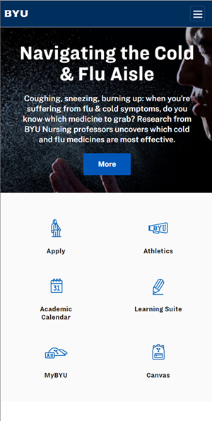

PARC: Alignment
Alignment: Every visual element on a page should have some kind of connection to at least one other element. Nothing should be positioned haphazardly.
Smithsonian MagazineSmithsonian Magazine is a good example of alignment. Notice in this image that the photos are top and left aligned. The text is left aligned but centered vertically with the photo. The text is connected to the image visually.
In the second image, the images are top aligned with each other, and the text is top-left aligned with the image.
In the last image, text is left aligned with the images, but vertically centered. Everything is visually connected.
PARC: Repetition
Repetition: Common elements, such as colors, graphics, layout styles, and so on, should be repeated to give a consistent look and feel to a page.
Brigham Young University Home Page
A good example of this is BYU's webpages. The logo is repeated on each of the main pages
Brigham Young University Hawaii Home PageThe repitition carries over to all of the CES schools. The logo of BYU HAwaii is graphically similar to BYU's, with just a different color. Note the similar icons below for navigation. This gives the user a familiar experience across the web site and accross the CES websites.
PARC: Contrast
Contrast: The idea of contrast is to make dis-similar elements very different. Contrast is one of the most powerful visual design tools.
Obys Agency Home PageThe Obys Agency in Ukraine uses a stark white on slate grey homepage to show a strong contrast. Highlighting their message -- We design unique web/graphic experience.